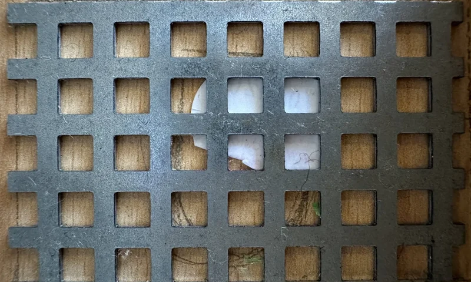
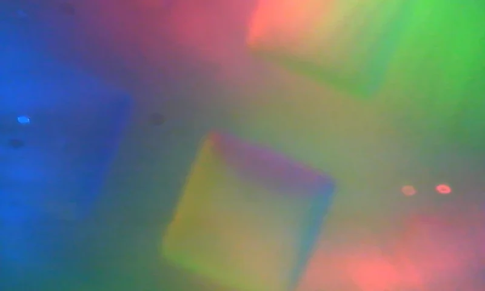

Frozen Representation Probing
Keep the foundation model fixed and train a small readout on its features. Can the readout estimate the mass of a box on a held-out trial?
We probe vision, touch, and sound to find which physical signals models encode, how those signals transfer, and which ones drive a prediction.

Perception, video generation, robotic interaction and world modeling require models to recover physical properties, characterize motion, infer dynamical factors and anticipate interactions. Foundation models learn from images, video, audio and touch under different pretraining objectives. These differences may shape which physical information their representations retain.
What physical information is encoded across modalities and pretraining objectives, and how does it support physical understanding and prediction?
Physical benchmarks reveal errors in question answering and video generation. The scores alone leave open which physical quantities a model encodes. Prior studies of representations often focus on particular model families, modalities or variables. Even when a probe accurately recovers a quantity, the cues that support the readout and the role of those features in prediction remain open questions.
We study physical-variable recovery alongside event judgment and future prediction across modalities and pretraining objectives. We train readouts on frozen representations, then compare fixed and refitted readouts as temporal cues, viewpoints and shapes change. Finally, we delete or exchange features associated with a variable and measure the effect on a fixed prediction readout. In selected experiments, we also test these edits in a frozen V-JEPA predictor.
Experimental protocol
We study more than 30 foundation models using images, video, touch and sound. For the moving-box experiments, the simulator gives us ground truth for quantities such as mass, speed and friction. We can change what a model sees while keeping the underlying physics fixed.
Keep the foundation model fixed and train a small readout on its features. Can the readout estimate the mass of a box on a held-out trial?
Show the same motion from another angle or give the model only the final frame. Test the original readout, then fit a new one to see what information survives the change.
Remove or exchange features associated with a quantity such as friction. Hold the predictor fixed and measure how far its forecast moves.
For a mass estimate, x is the video and Eℓ(x) is the feature vector from layer ℓ. Training adjusts only the readout fθ. Its output ŷ is the estimated mass.
Frozen-feature readouts
We first ask what a readout can recover. Read the chart across a model family to compare physical targets, or down a column to compare families. Larger filled circles mean stronger readouts.
| Mass | Material | Position | Lateral velocity | Depth velocity | Rotation speed | Friction | Force | Permanence | Non- |
Collision | Future motion | Future rotation | |
|---|---|---|---|---|---|---|---|---|---|---|---|---|---|
| Image | |||||||||||||
| Video | |||||||||||||
| Generative | |||||||||||||
| World model | |||||||||||||
| Vision-language | |||||||||||||
| Geometry | |||||||||||||
| Tactile | |||||||||||||
| Audio |
Depth velocity and non-penetration are difficult to read across visual families. Touch and audio were tested on material only.
A photograph can give clues to an object’s mass. For material, we can also measure what a surface feels like under contact or what it sounds like when struck.

All 16 visual models recover object mass. Their errors range from 0.71 to 1.34 bits, against 3.42 bits for a constant prediction.

SPARSH-MAE distinguishes materials by touch at 0.949 AUROC. I-JEPA, trained on images, reaches 0.947.

Material discrimination from impact sounds reaches 0.736 mean AUROC. A random-weight audio encoder reaches 0.704.
All ten models tested locate the object accurately. Tracking how fast it moves toward the camera is harder. The temporal models reach R² of 0.30–0.42 for depth velocity, while VGGT reaches 0.726.
The best layer depends on both the model and the quantity. Mass is easier to read from deeper layers in DINOv3 and V-JEPA 2.1, but from intermediate layers in LTX-2.5 and Cosmos.
Observation controls
If a model can estimate mass, would the same readout work from a different camera angle? Each clip pairs the original input with a control. The fixed score tests transfer. The refitted score tells us how much information a new readout can recover.
Each fine line tracks one model under one change. The bold lines and table give the mean across the four changes.
| Model | Original | Fixed | Refit |
|---|---|---|---|
| DINOv3 | 0.813 | 0.147 | 0.828 |
| V-JEPA 2.1 | 0.969 | 0.618 | 0.978 |
| Qwen3-VL | 0.970 | 0.640 | 0.962 |
| VGGT | 0.792 | 0.033 | 0.771 |
| LTX-2.5 | 0.991 | 0.891 | 0.991 |
| Cosmos-Predict2.5 | 0.991 | 0.815 | 0.991 |
The four changes are a 35° camera yaw, a 15° camera elevation, new box trials and cylinder trials. Each score averages test R² for mass, mean speed and friction, with each R² clipped to [0, 1].
Event judgments
Recognizing that two objects collided and judging whether a solid object passed through another are different tasks. We test six models on real collision videos and separately on physically possible and impossible scenes.
| Model | Non- | Collision |
|---|---|---|
| DINOv3 ViT-L/16 | 0.518 | 0.856 |
| V-JEPA 2.1 ViT-L | 0.547 | 0.969 |
| Qwen3-VL 8B · visual | 0.540 | 0.815 |
| VGGT 1B | 0.549 | 0.826 |
| LTX-2.5 | 0.552 | 0.904 |
| Cosmos-Predict2.5 2B | 0.585 | 0.886 |
On Something-Something v2, all six collision readouts score at least 0.815 AUROC. On IntPhys2, even the strongest non-penetration readout reaches only 0.585, close to chance (0.50).
Given only the observed part of a Genesis trajectory, the best readout depends on what happens next. LTX-2.5 leads on displacement, V-JEPA 2.1 on angular velocity, and Cosmos on accumulated rotation. We use these future targets to ask which features the predictions depend on.
Feature interventions
Take a readout trained to predict future displacement. We erase features associated with one physical variable and ask it to predict again. The bigger the drop in accuracy, the more that forecast depended on the edited features.
Prediction loss · fraction of oracle drop
Readability before deletion · probe R²
Each point represents one model, scene and erased variable. We normalize within each split, then average over three splits. Results include fixed readouts with baseline future R² ≥ 0.30.
How far will a box slide in the next second? We estimate its displacement from the features forecast by the frozen V-JEPA 2.1 predictor. With unedited features, the displacement readout reaches a test R² of 0.970.
We edit one cue before it reaches the predictor. Erasing it tests how much the forecast depends on that cue. In a separate test, we swap the cue between two clips and check whether the forecast shifts in the direction of the donor clip’s displacement.
| Edited cue | Test R² after erasure | Swaps in donor’s direction |
|---|---|---|
| Friction coefficient | 0.794 | 100% |
| Terminal speed | 0.781 | 100% |
| Terminal y-position | 0.970 | 37.5% |
A single frame taken at the end of a box’s motion can already give a readout enough evidence to estimate its mean speed. Changing the box to a cylinder can defeat a mass readout even though a new one recovers mass. And in a displacement forecast, erasing friction-linked features matters far more than erasing position. Together these experiments show where a physical signal is available, which observations support it, and when a particular prediction depends on it.